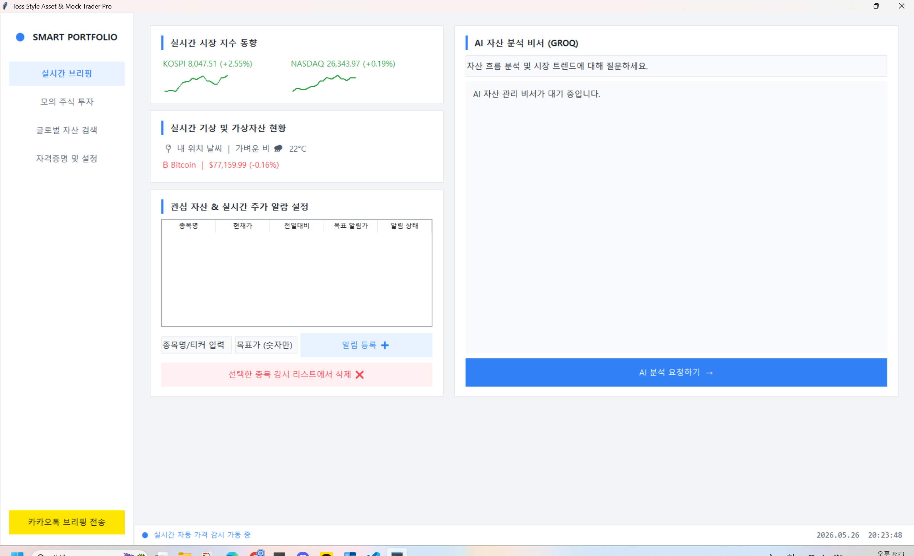
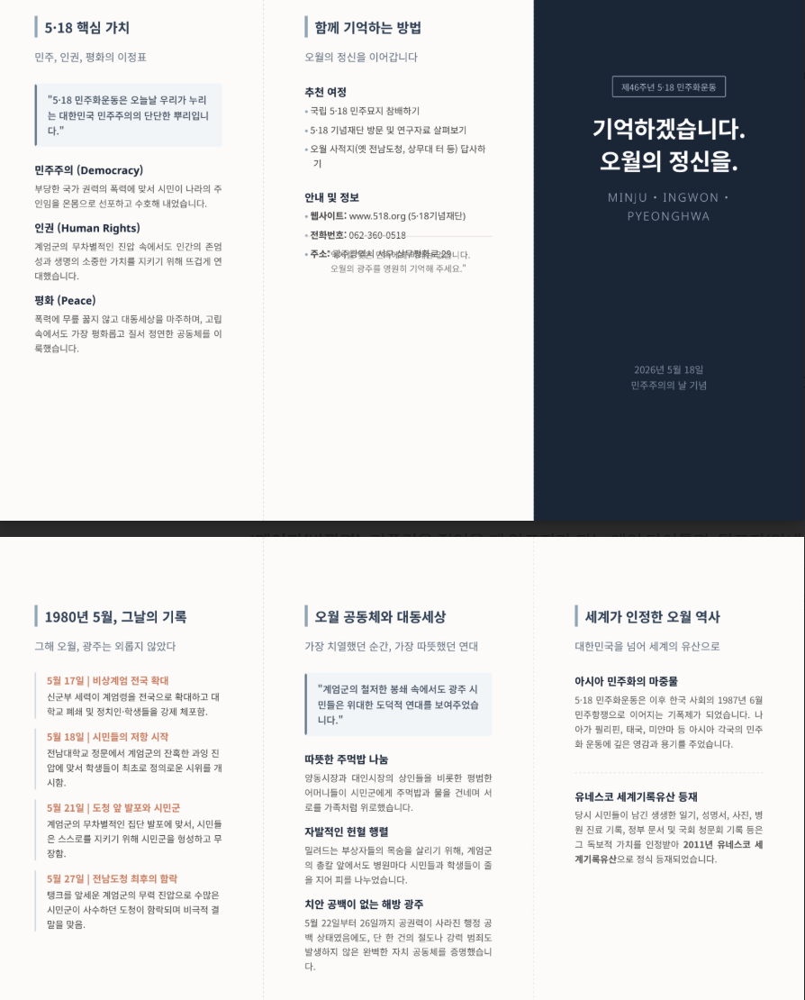

이 프로젝트는 실시간 시장 지수 동향과 가상자산 현황을 한눈에 파악하고 사용자가 직접 모의 투자를 경험할 수 있는 대시보드 형태의 웹 애플리케이션입니다. AI 자산 분석 비서 기능을 도입하여 사용자의 질문에 맞춰 자산 흐름을 분석해 주며, 관심 종목에 대한 실시간 주가 알림 설정 및 카카오톡 브리핑 전송 기능까지 구현하여 편의성을 극대화했습니다.

이 프로젝트는 한국 현대사의 중요한 전환점인 5·18 민주화운동의 역사적 기록과 핵심 가치를 널리 알리기 위해 제작된 정보 안내 웹 사이트입니다. 1980년 5월의 날짜별 기록과 오월 공동체의 대동세상을 시각적인 타임라인과 레이아웃으로 깔끔하게 구성했으며, 국립 5·18 민주묘지 참배 등 관련 안내 정보와 추천 여정을 직관적으로 전달하도록 설계했습니다.